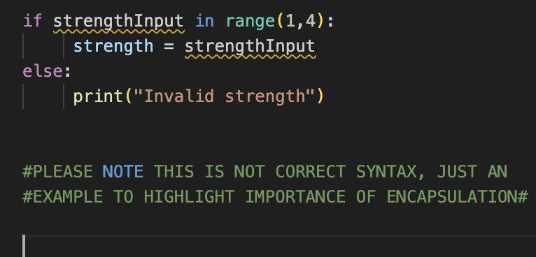

Bundling of attributes (values) and behaviours (methods) into one unit or package.
+
Information Hiding (Privacy)
WE SET THESE WITH ACCESS MODIFIERS(Python)
Josh = Josh <<<<<(Public)
_Josh = Josh <<<<<(Protected)
__Josh = Josh. <<<<<(Private)
Think of a nightclub bouncer, anyone can not just walk-in, we need to provide ID so our age can be VALIDATED before we gain ACCESS to the nightclub. In this scenario the bouncer is the METHOD. The partygoer is the USER. The nightclub is the VARIABLE
Get and Set
Basically the public cannot walk in and gain access without going through the bouncer, this obviously helps validate that nobody underage enters and restricts who can and cannot have access
If we were able to set directly to the coffee machine our coffee strength we may run into issues
If a coffee machine had 3 strengths, what would happen if we input a strength of 4?
Likely the coffee machine would either not work at all or not work as intended! Other functions within the object/class would likely not be able to function without a valid input
Think of the class functions as INTERMEDIARIES that can GET (read) and SET (write), they will do this providing the parameters in the function are met, SEE EXAMPLE
Therefore when we go through a (set)method the object can validate whether the input is valid before writing to the coffee machine, see below
This will eliminate errors occurring that would have happened if we were able to set the objects variables ourselves